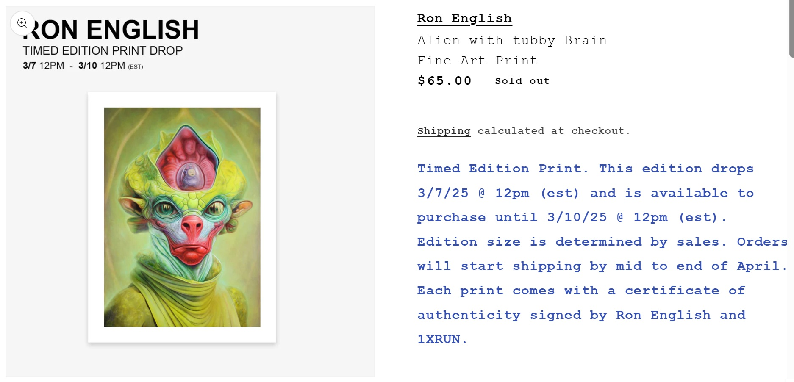

Notes
This work references the children’s television series Teletubbies.
This composition was later issued by 1XRUN as a timed-edition fine art print under the title Alien with tubby Brain, released on March 7, 2025. The print measured 12 × 16 inches, was produced as an archival pigment print on 290gsm Moab Entrada Fine Art Paper, and the final edition totaled 27 impressions.
The image also appears on VeVe’s digital comic page for Ron English’s Area 54 #1.
Ancillary Documentation

